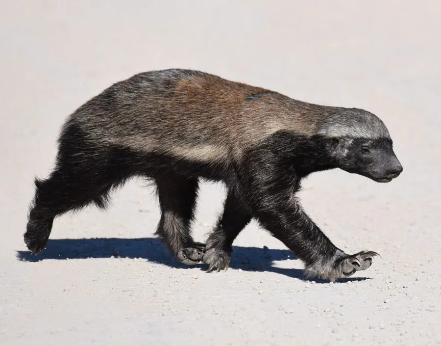

哺乳动物 · 动物界
蜜獾 Mellivora capensis

以勇猛著称的鼬科动物，背部灰白、腹部乌黑，皮肤厚韧且能抗蛇毒，敢于正面对抗狮子，也爱吃蜂蜜。
- 分类
- 门脊索动物门纲哺乳纲目食肉目科鼬科属蜜獾属
- 栖息环境
- 稀树草原、灌丛、荒漠与森林边缘，适应多种干旱环境
- 地理分布
- 非洲撒哈拉以南、中东及南亚的广大地区
- 保护级别
- IUCN 无危（LC）
物种志
蜜獾体长 0.55–0.77 米，尾长 0.2–0.3 米，体重 5.5–16 kg。它的毛色十分醒目，背部从头顶到尾部覆盖灰白色至银灰色的长毛，腹部、四肢和面部为黑色，形成鲜明的“披风”图案；身体粗壮，皮肤厚而松弛，爪子强壮，适合挖掘。
蜜獾分布于非洲撒哈拉以南、中东和南亚的草原、灌丛和荒漠，栖息地类型多样，从稀树草原到森林边缘都能生存。它是杂食动物，食谱包括昆虫、蜥蜴、蛇类、鼠类、鸟类、果实和蜂蜜，会与响蜜鴷合作寻找蜂巢；厚韧的皮肤和一定的抗蛇毒能力使它敢于捕食毒蛇。蜜獾多为独居或成对活动，多在夜间和晨昏活动，领地以气味标记；雌兽妊娠期约 6 个月，每胎 1–2 仔。它性情凶猛，甚至会驱赶狮子、豹等大型捕食者。
形态与习性
- 食性昆虫、蜥蜴、蛇类、鼠类、鸟类、果实与蜂蜜
- 体长0.55–0.77 m，尾长 0.2–0.3 m
- 体重5.5–16 kg
- 寿命野外约 10–15 年
- 繁殖妊娠期约 6 个月，每胎 1–2 仔
- 皮肤厚而松弛，能抵御蛇咬和蜂蜇
- 合作会与响蜜鴷合作寻找蜂巢
趣味知识
- 蜜獾的皮肤厚而松弛，能抵御蛇牙和蜜蜂蜇刺。
- 它会与响蜜鴷合作寻找蜂巢，再掏食其中的蜂蜜。
- 蜜獾性情勇猛，面对狮子、豹也敢于正面反击。
- 它对部分蛇毒有较强耐受性，会主动捕食毒蛇。